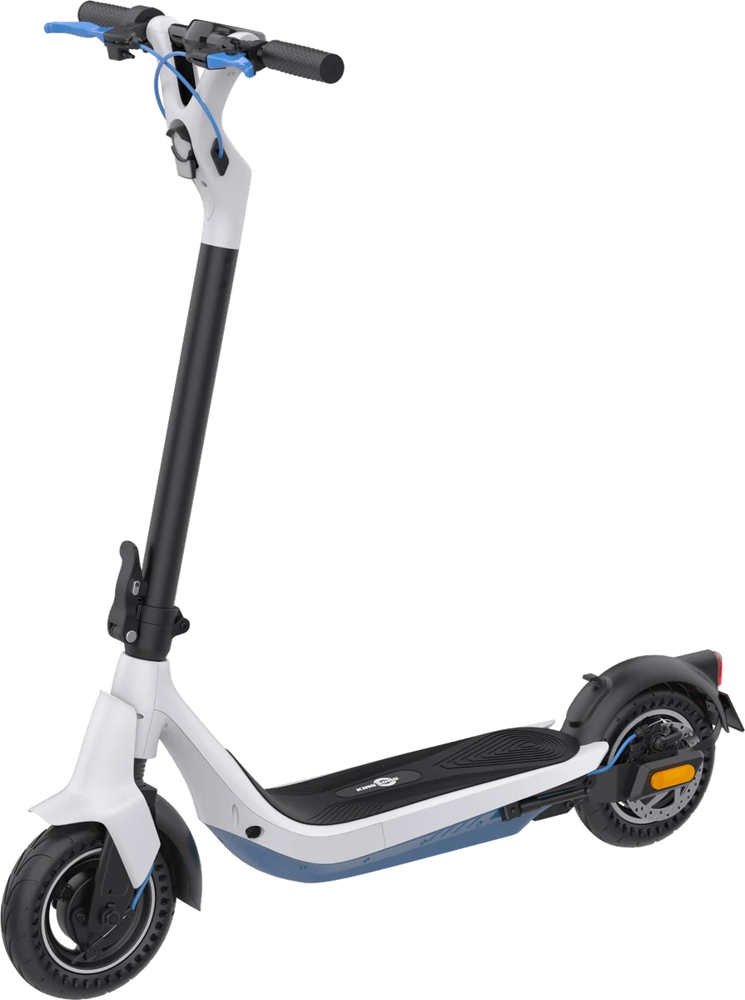
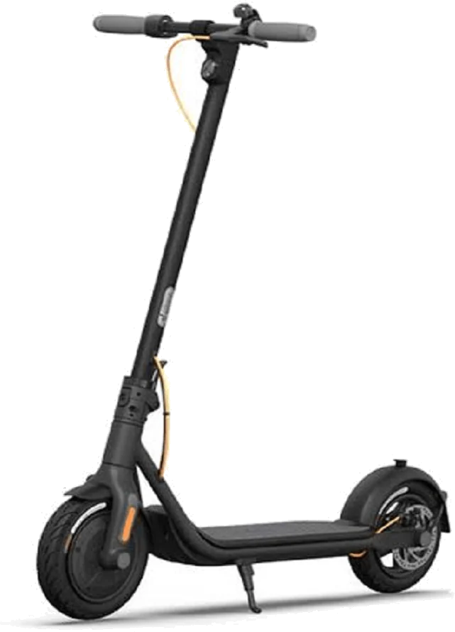
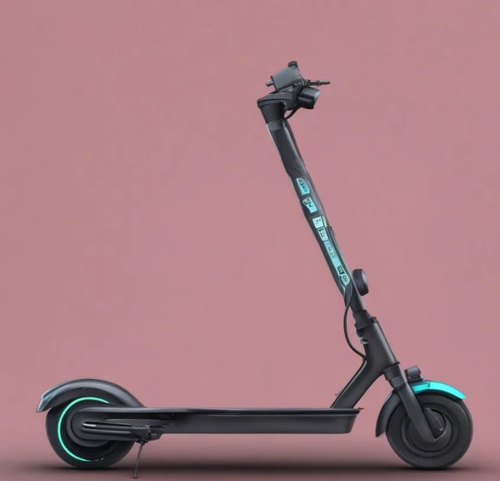

Llegas en minutos
Estaciones en los paraderos del burrito interno. Bajas del burrito, subes al scooter y sigues tu ruta.
Movilidad eléctrica · Campus UNMSM
Scooters eléctricos en los paraderos del campus. S/ 1 por media hora, sin apps complicadas y sin llegar tarde.

La diferencia
No es un bus, no es una bicicleta y no es caminar con la mochila llena. Es la forma más simple de moverte entre pabellones.
Estaciones en los paraderos del burrito interno. Bajas del burrito, subes al scooter y sigues tu ruta.
S/ 1 por media hora. Sin membresías, sin depósitos y sin letra chica.
100% eléctrico. Más silencio en el campus y menos humo en el aire que respiras entre clases.
Así de simple
No necesitas descargar nada ni dejar tu DNI en garantía. Todo pasa en el paradero.
Mira las estaciones del campus y escoge la que está más cerca de tu ruta.
Selecciona fecha, hora y duración. Te damos un código de recojo al instante.
El personal del paradero valida tu reserva y te entrega el scooter listo para rodar.
Puedes dejarlo en cualquier estación SQ del campus. Sin vueltas ni penalidades.
La flota
Tres perfiles, la misma idea: moverte rápido, seguro y sin gastar de más.

El equilibrio perfecto entre tamaño, autonomía y precio. Ideal para ir de una facultad a otra.
El todo terreno del campus. Más autonomía y una canasta para la laptop y los apuntes.

Para clases que terminan tarde. Luces LED, freno reforzado y una postura más estable.
Especificaciones y tarifas del prototipo académico. No corresponden a un servicio comercial real.
Reserva simulada
Elige paradero, fecha y duración. El total se calcula al instante y te damos un código de recojo.
Reserva confirmada
Código SQ-0000
Dudas frecuentes
Si tu duda no está aquí, abre un issue en el repositorio y la respondemos.
En los paraderos del burrito interno: Puerta 1, Biblioteca Central, FISI, Comedor Universitario y Estadio UNMSM.
S/ 1 por los primeros 30 minutos y S/ 0.50 por cada 30 minutos adicionales. El prototipo permite reservas de hasta 2 horas.
Cada scooter tiene autonomía para varias vueltas al campus. Si la batería baja del 15%, el scooter se bloquea y el personal del paradero lo reemplaza.
No. El prototipo está pensado solo para el campus de la UNMSM. Salir del perímetro apaga el motor por seguridad.
Avisa al personal del paradero o abre un issue en el repositorio del proyecto con una foto y el código del scooter.